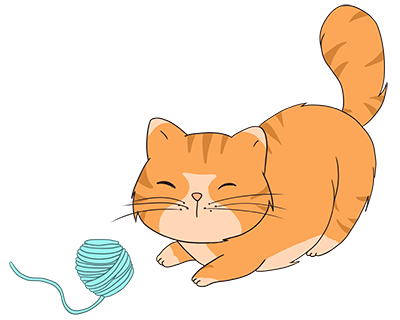

Home
Sobre nós
Contribua
Contato
Bem vindo ao
ResGatar
O maior site de doação de Poa e região!

É novo por aqui?
Você pode saber mais sobre quem somos nós
clicando aqui
!
Para nos a judar a manter esse projeto, e continuar a cuidar dos nossos bichinhos você pode
clicar aqui
.
Em caso de dúvidas, fique a vontade para nos contatar a qualquer momento,
clicando aqui
.